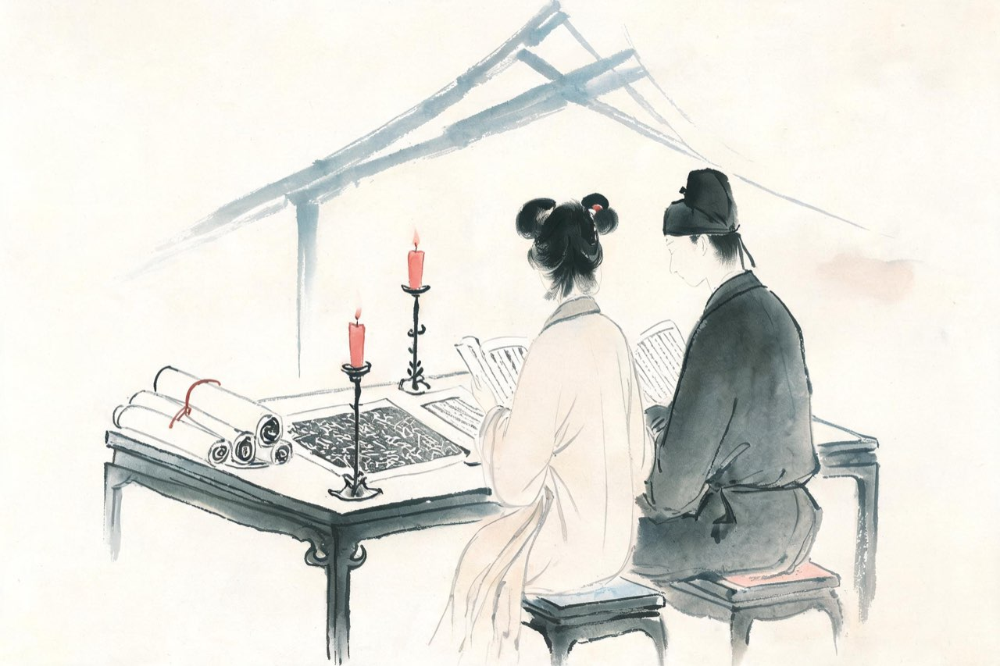
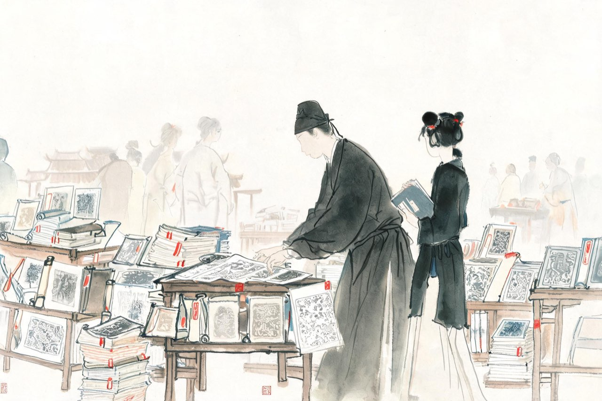
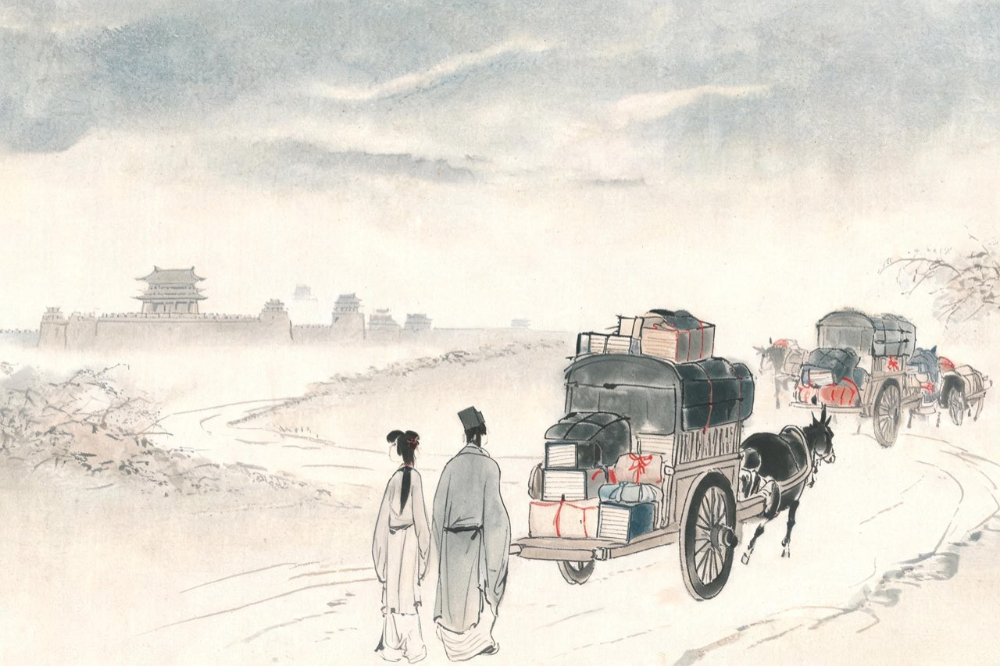

李清照 · 1101-1107
汴京
中州盛日

十八岁归赵氏
建中靖国元年，你十八岁，嫁入赵家。
丈夫赵明诚，二十一岁，还在太学读书，每月初一、十五才能告假归家。父亲赵挺之，正在朝中做侍郎，与你的父亲同朝为官。
嫁过去之前，你的词名已经先你一步进了城。相传他婚前曾得一梦，醒来只记得书中三句，旁人替他拆解，是「词女之夫」四个字。这样的故事，多半是后人替他们编的；但你们两个人都信金石、都爱书，是真的。
一个写下过「绿肥红瘦」的新妇，和一个房间里堆满碑帖拓片的太学生——这桩婚事，汴京的文人们乐见其成。
注
- 「词女之夫」梦兆故事出伊世珍《琅嬛记》，属笔记传说，不作实事叙述
- 赵明诚生于元丰四年（1081），时年二十一，从年谱

相国寺买碑
太学生清贫。每月朔望归家，他先去当铺，典掉随身衣物，换回五百钱。
然后步行进大相国寺。万姓交易的庙市里，有卖碑文拓片的摊子。他一张张翻检，挑出中意的，再买些果子，一并抱回来。
你们相对展玩，把果子分着吃了，自比葛天氏之民——上古之世，无怀氏之民，不知有汉，无论魏晋的那一种快乐。
多年后你在《金石录后序》里回忆：那时虽然贫，却有天下最好的收藏欲。两代人收藏的事业，就从这五百钱开始。
注
- 「葛天氏之民」：《后序》原文自比，取上古淳民之意
- 相国寺每月五次开放万姓交易，为汴京最大庙市，书碑摊肆在其中
太学生一个月只有两天假。新婚第一年，你们聚少离多。又是秋天，红藕香残的时节，竹席凉了下来，你独自睡去，独自醒来，独自解舟——相思无法可解，你把它写下来，寄给他——
一剪梅·红藕香残玉簟秋
红藕香残玉簟秋。轻解罗裳，独上兰舟。
云中谁寄锦书来？雁字回时，月满西楼。
花自飘零水自流。一种相思，两处闲愁。
此情无计可消除，才下眉头，却上心头。
注
- 旧说以此词系于赵明诚「负笈远游」，不足据——太学生朔望告假归家，聚少属实，无须另造远游
- 「玉簟」：光洁如玉的竹席；「锦书」用苏蕙织锦回文典，指书信
党锢
崇宁元年，变故从父辈开始。七月，朝廷开列元祐党籍，你的父亲李格非名列其中，罢官。
而你的公公赵挺之，在同一年升任御史中丞——追劾元祐党人的事，正是他这一路人做的。
一门两党：娘家有难，婆家得意。你上诗公公，替父亲求情。诗没能完整流传，只剩一句：「何况人间父子情。」
求情有没有用，史无明文。这年之后的数年间，党禁越收越紧：元祐党人子弟不得居京。你的父亲回到了山东。政治的裂缝，从两家人中间穿了过去。
注
- 「何况人间父子情」：残句，传为清照上赵挺之诗，出处晚出，真伪参半——诗句本身流传极广
- 赵挺之升御史中丞的月份，史料记载不一
- 李格非罢官后行踪，史料甚少；党人子弟不得居京为崇宁间党禁通例

家败
此后三年，朝局像走马灯。崇宁五年正月，彗星出现，朝廷以为不祥，毁元祐党人碑，大赦。二月，蔡京罢相，赵挺之进为独相。六月，蔡京复相，赵挺之罢。
大观元年三月，赵挺之去世。三天之后，蔡京的发难就到了：赵家子孙下狱鞫问。查不出实情，尽数释放——但父辈挣下的荫封，一并被革去。
官场之路，一夜断绝。这年秋天，全家离开汴京，回到青州故里。你二十三岁。
离开的时候你在想什么，没有人知道。多年以后你会再写起汴京——「中州盛日，闺门多暇，记得偏重三五」——但那是很后面的故事了。
注
- 「中州盛日」三句出《永遇乐·落日熔金》，晚年追忆汴京元宵——与本场景形成首尾呼应，演绎
- 赵挺之卒后家属下狱鞫问、无实获释、荫封被革，从《后序》与《宋史》本传